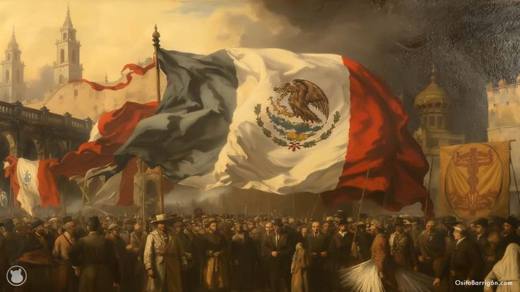

La Independencia de México
Fue el resultado de un conjunto de factores políticos, económicos, sociales e ideologicos
que se desarrollo durante varias decadas

Causas Internas
Desigualdades Sociales
- El sistema de castas coloca a los españoles y descendientes en situaciones privilegiadas
Situación económica dificil
- Los altos impuestos españoles afectaban a comerciales, Mestizos y campesinos sufrían pobreza,
explotación laboral y pagos de tributos
Reformas Barbónicas
- Redujeron la autonomia de las autoridades locales
- Generaron descontentos entre los criollos al limitar su participación política y economica
Causas Externas
Influencia de las ideas de la Ilustración
- Se promovían ideas de libertad, igualdad, justicia y soberania popular
- Cuestionaban el absolutismo monárquico
- Llegaron a la Nueva España mediante libros, universidades y miembros ilustrados del clero
Invasión Napoléonica a España en 1808
- Napoléon Bonaparte obligó a abdicar al Rey Fernando VII e impulsó a su hermano al trono
Momentos y Acontecimientos destacados
Datos Importantes
- Inició el 16 de Septiembre 1810
- Encabezada por el sacerdote Miguel Hidalgo y Costilla
Acontecimientos Significativos
- El grito de Dolores es considerado el inicio formal del movimiento
- Una de sus victorias fue que tomaron cuidades como San Miguel el Grande, Celaya
- La toma de la Alhóndiga de Granaditas, en Guanajuato
- Un momento decisivo fue La batalla de Monte de las cruces-Victoria que abrió el camino hacia la Cuidad de México
Enero de 1811
- Miguel Hidalgo, Ignacio Allende, Juan Aldama y Mariano Jiménez fueron juzgados y ejecutados,
marcando el final de la primera etapa de la Independencia
Tras la muerte de Hidalgo
- Jose Maria Morelos y Pavón asumió el liderazgo, proporcionando una organización
política y militar más solida
El documento Sentimientos de la Nación, presentado durante el congreso de Chipancingo en 1813,
propuso que:
- La Soberanía residiera en el pueblo y no en el Rey de España
- La América Mexicana debía ser libre e independiente
- Estableció la división de Poderes en Ejecutivo, Legislativo y Judicial
- Promovió la eliminación de las diferencias entre castas
- Planteó la aolición de la esclavitud
- Morelos fue capturado y ejecutado en 1815
- Sus propuestos sirvieron como fundamento para la organización Politica de México
- Sus ideas presentaron un avance en la construcción de un proyecto nacional basado en:
- La libertad
- La justicia social
- El respeto a los derechos de la población
- En 1814 Vicente Guerrero continúa la lucha insurgente en el sur del pais
- Se fortalece el sentimiento nacional con ek apoyo del pueblo y de la Iglesia
- En 1821 Agustín de Iturbide propone el Plan de Iguala:
- Religión, Unión e Independencia
- Se firman los tratados de Cordoba el 24 de Agosto que reconoce la Independencia de México